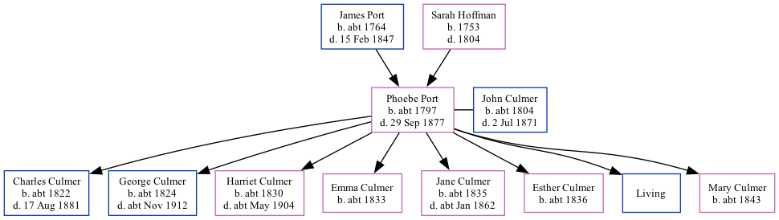

Phoebe Culmer (née Port) c1797 - 1877
[ Home ] | [ Calendar ] | [ Surnames Index ] | [ Family History ]The child of James Port and Sarah Hoffman, Phoebe Port, the 3 times great-grandmother of Nigel Horne, was born in Herne, Kent, England c. 17971,2,3,4,5,6,7,8, was baptized there at St Martin on Jul 16, 1797 and married John Culmer (an agricultural laborer with whom she had 8 children: Charles, George, Harriet, Emma, Jane, Esther, John and Mary, along with 1 surviving child) at St Mary the Virgin Church, Fordwich, Kent, England on Sep 9, 18209.
Phoebe spent all of her life in Kent, England. Throughout her life, she lived in several places around the county: in Blean on Jun 6, 18412; at Doll House, Blean on Mar 30, 18514; and on New Road, Blean on Apr 7, 18616 and on Apr 2, 187111.
She died on Sep 29, 1877 at Bretts Passage, Canterbury, Kent8 (chronic bronchitis and old age) and was buried at St Dunstan, Canterbury on Oct 4, 187710.
Parents
- James was born c. 1764
- Sarah was born in 1753
Children
- Charles was born c. 1822
- George was born c. 1824
- Harriet was born c. 1830
- Emma was born c. 1833
- Jane was born c. 1835
- Esther was born c. 1836
- Mary was born c. 1843
Citations
- 1841 England Census Online publication - Provo, UT, USA: The Generations Network, Inc., 2006.Original data - Census Returns of England and Wales, 1841. Kew, Surrey, England: The National Archives of the UK (TNA): Public Record Office (PRO), 1841. Data imaged from the National
- 1841 England, Wales & Scotland Census - Findmypast (was age 44)
- 1851 England Census Online publication - Provo, UT, USA: The Generations Network, Inc., 2005.Original data - Census Returns of England and Wales, 1851. Kew, Surrey, England: The National Archives of the UK (TNA): Public Record Office (PRO), 1851. Data imaged from the National
- 1851 England, Wales & Scotland Census - Findmypast (was age 54 and the wife of the head of the household)
- 1861 England Census Online publication - Provo, UT, USA: The Generations Network, Inc., 2005.Original data - Census Returns of England and Wales, 1861. Kew, Surrey, England: The National Archives of the UK (TNA): Public Record Office (PRO), 1861. Data imaged from the National
- 1861 England, Wales & Scotland Census - Findmypast (was age 64 and the wife of the head of the household)
- 1871 England Census Online publication - Provo, UT, USA: The Generations Network, Inc., 2004.Original data - Census Returns of England and Wales, 1871. Kew, Surrey, England: The National Archives of the UK (TNA): Public Record Office (PRO), 1871. Data imaged from the National
- England & Wales, FreeBMD Death Index: 1837-1915 Online publication - Provo, UT, USA: The Generations Network, Inc., 2006.Original data - General Register Office. England and Wales Civil Registration Indexes. London, England: General Register Office. © Crown copyright. Published by permission of the Cont
- England, Select Marriages, 1538–1973 Ancestry.com Operations, Inc.
- Kent, Canterbury Archdeaconry burials 1538-1988 - Findmypast
- 1871 England, Wales & Scotland Census - Findmypast (was age 74 and the wife of the head of the household)
Media
Phoebe Culmer - death certificate

Kent, Canterbury Archdeaconry burials 1538-1988 - GBPRS/CANT/D/95490855
England & Wales deaths 1837-2007 - BMD/D/1877/4/AZ/000078/284
England Marriages 1538-1973 - R_848231605/2
Kent, Canterbury Archdeaconry marriages - GBPRS/CANT/M/97154975/2
1861 England, Wales & Scotland Census - GBC/1861/0003452318
1871 England, Wales & Scotland Census - GBC/1871/0014197025
1841 England, Wales & Scotland Census - GBC-1841-0013915022
Kent Baptisms - GBPRS-CANT-B-96123746
England Births & Baptisms 1538-1975 - R_884938183
Kent Baptisms - GBPRS/CANT/B/96579417
Family Tree
Generated by Ged2Site. Last updated on Jul 20, 2025